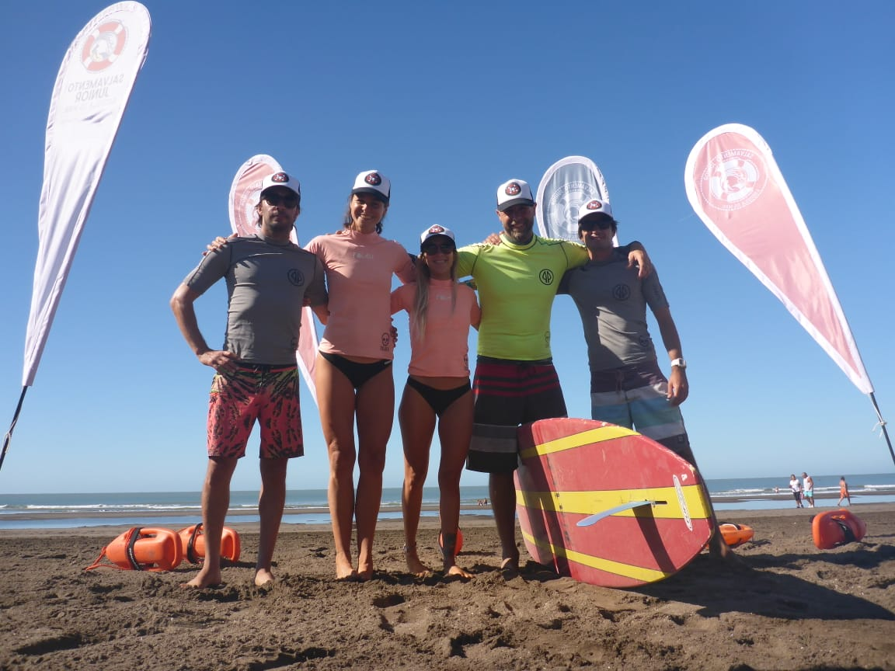

Nace la idea
Amigos, docentes y guardavidas imaginan Escuela de Mar.
Nosotros
La escuela que soñamos
Escuela de Mar nació de la amistad, de nuestra profesión y de una pasión compartida. Somos amigos, docentes y guardavidas vinculados a la educación, al salvamento, a la naturaleza y a los deportes de tablas en el mar.
En 2018 empezamos a imaginar un espacio diferente para los chicos y chicas de Monte Hermoso. En enero de 2019 comenzó nuestra primera temporada.

Amigos, docentes y guardavidas imaginan Escuela de Mar.
La experiencia transforma el conocimiento en algo vivido.
El mar cambia. Aprender a observarlo es el primer paso para comprenderlo.
Reconocer el riesgo también es aprender a cuidar.
Nuestra seguridad y la de los demás forman parte del mismo aprendizaje.
Esperar, acompañar, pedir ayuda y ofrecerla.
La playa y el mar son parte de la Escuela.
Nuestro presente y nuestro horizonte
Somos una asociación civil que conecta educación, prevención, deporte y comunidad a partir de la experiencia directa con el mar y el ambiente costero.
El mar, la playa y los médanos son espacios para observar, experimentar, hacer preguntas y construir conocimientos.
Promovemos la participación de las infancias y juventudes en experiencias comunitarias que fortalezcan el vínculo con su ambiente.
Buscamos ampliar nuestras propuestas educativas y deportivas mediante proyectos, alianzas y oportunidades de acceso.
Frente a los desafíos de la crisis climática, apostamos por una educación situada que contribuya a fortalecer las capacidades de nuestra comunidad. Esta perspectiva orienta nuestros proyectos en desarrollo.
Conocé nuestros proyectos →LA ESCUELA QUE HUBIÉRAMOS QUERIDO TENER.
Hoy esa escuela existe: en la playa, en el agua, en las instituciones y en cada chico y chica que descubre nuevas maneras de aprender, crecer y relacionarse con el mar.